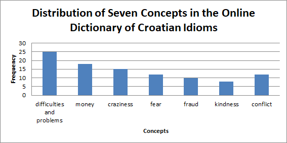

1Ta članek preučuje potencial ChatGPT pri avtomatizaciji dveh leksikografskih nalog v Spletnem slovarju hrvaških frazemov (ODCI): (1) prepoznavanje semantičnih ekvivalentov med frazemi in (2) generiranje semantičnih polj za frazeološke enote. Cilj raziskave je oceniti, kako učinkovito lahko umetna inteligenca avtomatizira proces razlikovanja in razvrščanja frazemov glede na pomen ter s tem zmanjša obseg ročnega leksikografskega dela. Ker se metodologije za uporabo jezikovnih tehnologij še vedno razvijajo vzporedno s tehnološkimi inovacijami, ta študija prispeva k boljšemu razumevanju delovanja orodij umetne inteligence ter njihove sposobnosti ustvarjanja kakovostnih in uporabnih jezikovnih podatkov. Rezultati kažejo, da ChatGPT izkazuje velik potencial za konceptualno organizacijo v leksikografiji. Kljub temu ostajajo izzivi, predvsem v zvezi z nedeterministično naravo odgovorov, generiranih z UI, in potrebo po ročnem urejanju avtomatskih podatkov.
2Ključne besede: umetna inteligenca, veliki jezikovni modeli, leksikografija, frazemi, konceptualna organizacija
1This paper explores the potential of ChatGPT in automating two lexicographic tasks within the Online Dictionary of Croatian Idioms (ODCI): (1) identifying semantic equivalents among idioms and (2) generating semantic fields for idiomatic expressions. The study evaluates how effectively AI can automate the process of distinguishing and grouping idioms by meaning, with the aim of reducing manual lexicographic work. As contemporary methodologies for employing language technologies continue to develop alongside technological progress, this research enhances understanding of AI capabilities in linguistic analysis. The findings suggest that ChatGPT shows considerable potential for conceptual organisation in lexicography. Nevertheless, challenges persist, especially regarding the unpredictable nature of AI-generated responses and the necessity for human post-editing.
2Keywords: artificial intelligence, large language models, lexicography, idioms, conceptual organisation
1The rapid advancement of artificial intelligence (AI) is transforming nearly all areas of knowledge and society, including lexicography. The reflection of social and technological changes in dictionaries is not a new phenomenon – lexicographers have long embraced technological innovations such as corpora, dictionary writing systems, and user interfaces. Before advanced AI tools like ChatGPT,1 semi-automatic dictionary creation based on post-editing lexicography gradually became the preferred method,2 combining automatic data generation with human post-editing, where lexicographers assess, refine, and finalise entries.
2The rise of AI, especially large language models (LLMs), has prompted many questions about its effect on lexicography. These questions range from whether traditional methods can be abandoned to identifying which lexicographical tasks could benefit from AI. For instance, there has been an ongoing debate about whether generative AI chatbots like ChatGPT could replace corpus-based technologies such as concordances and keyword analysis, providing greater efficiency, lower costs, and access to data that is otherwise difficult to obtain.3
3Simultaneously, scepticism persists regarding the quality and reliability of AI-generated content.4 Critics point out risks such as hallucinations, data inaccuracies, and the erosion of user trust in AI-generated content. The latter is particularly critical in lexicography, as dictionaries have long served as trusted sources of information,5 a legacy rooted in the Enlightenment’s prescriptive tradition.6 Consequently, it is evident that if modern lexicography aims to incorporate advanced technologies, more empirical evidence is required to evaluate their effectiveness and the quality of the outcomes they produce.
4In this paper, we examine the potential of LLMs, particularly ChatGPT, to automate two tasks within the Online Dictionary of Croatian Idioms7 (ODCI): (1) identifying semantic equivalents among idioms and (2) generating semantic fields or conceptual categories for idioms. The lexicographers working on this dictionary aim not only to present dictionary content in the traditional format – entries featuring idioms – but also to develop a specialised resource: a thematic index containing semantic fields (concepts) in which idioms are grouped according to meaning and linked to their corresponding dictionary entries. Although this conceptual organisation was initially created manually, making it a highly time-consuming process, it offers a solid foundation, as human-annotated subsets of idioms can serve as benchmarks for evaluating the accuracy and quality of AI-generated results.
5Testing LLMs in this context is especially important because of the complexity of idiomatic expressions, which continue to challenge current language technologies. For example, machine translation tools often translate Croatian idioms literally, ignoring their true meanings. Previous research8 has made significant progress in connecting idioms across languages based on semantic similarity. However, these studies relied on relatively small datasets.
6This paper aims to evaluate how effectively AI tools can automate the lexicographic task of distinguishing and grouping the meanings of idioms to reduce the post-lexicographic workload to a manageable level. Additionally, as the methodology for integrating language technologies continues to develop and is influenced by new technological advancements, this paper also seeks to deepen the understanding of AI tools’ language processing capabilities and determine how they can produce high-quality, useful linguistic data for the scientific community.
7This paper builds on our previous study9 by expanding its scope and improving its methodology. The original research examined large language models (LLMs) for automating lexicographic tasks in the Online Dictionary of Croatian Idioms (ODCI). With the release of GPT-4o, a key motivation for this extension was to assess its improvements over the previously tested GPT-3.5-turbo in terms of accuracy, consistency, and usability. The main enhancements introduced in this paper include: (1) evaluation of a new LLM model – a systematic comparison of GPT-4o and GPT-3.5-turbo to identify improvements in recognising semantic equivalents and generating conceptual categories for idioms; (2) refined methodology – the initial test, which compared LLMs in ranking idioms by semantic field, was restructured as a selection step, while the follow-up categorisation task with a limited idiom set was omitted due to limited additional insight; (3) optimised prompt engineering – the second lexicographic task was re-examined using refined prompt formulations to improve LLM performance and reliability. By adopting these modifications, this paper not only reinforces the empirical basis of our initial study but also provides insights into the advancing capabilities of cutting-edge LLMs for lexicographic applications.
8The paper is organised as follows: the next section describes the linguistic resource and the theoretical framework for conceptual organisation in lexicography. This is followed by an outline of the tasks and findings, while the final section presents the conclusion and future directions.
1Despite promising advances in applying language technologies to dictionary compilation over the last decade, many European languages remain under-resourced, including Croatian, particularly in terms of freely available e-dictionaries and resources.10 The project11 to create the Online Dictionary of Croatian Idioms was launched in 2019 at the Croatian Academy of Sciences. It aimed to develop an open-access, born-digital dictionary based on a corpus, built with freely available lexicographic tools and the expertise of linguistically trained lexicographers.
2The project introduced a post-editing lexicography model, where lexicographers evaluate and refine automatically generated data. Although this model has not been fully implemented in this dictionary, several automated processes have been utilised. For corpus searches, we used the Sketch Engine,12 which was freely accessible to academic members through the ELEXIS project (2018–2022). Sketch Engine provided concordances from hrWaC, the largest Croatian corpus at the time.13 Additionally, Lexonomy,14 a platform for creating and publishing dictionaries, served as both the dictionary writing system and publishing platform.
3Lexicographic processing combines manual and automated approaches. Concordances were manually examined and analysed, while multi-word expressions were extracted using the Word Sketch feature. Frequency and usage statistics, including the LogDice metric, which evaluates the strength of word associations in collocations, helped identify commonly co-occurring terms. The GDEX (Good Dictionary Example) algorithm was employed to generate a list of candidate examples, which lexicographers reviewed manually to ensure they were typical and illustrative for dictionary entries. Entries in Lexonomy were compiled manually. Version 2, released in 2023, contains 563 entries and 1,165 idioms.15
1The advancement of technology has created many opportunities for presenting dictionary content digitally. The introduction of hyperlinks connecting entries that are far apart alphabetically – such as multi-word expressions with similar meanings but different structures – would likely have impressed lexicographers from the pre-digital era. They often compiled extensive lists to categorise expressions by domains of knowledge, attempting to make them searchable within the linear format of printed media. For phraseological dictionaries in particular, the ability to link idioms with very different expressions is revolutionary. For example, idioms like fali komu daska u glavi (lit. someone is missing a plank in the head) and nisu komu sve koze na broju (lit. someone’s not keeping a tab on all their goats) both mean ‘to be crazy or insane.’ In a printed dictionary, these idioms might only appear under the first noun in the construction (such as plank or goat), potentially missing the connection to the related idiom. As a result, lexicographers have long sought ways to show semantically related words, though alphabetical order still dominates most dictionaries. Advocates of conceptual organisation believe it better reflects how the human mind categorises ideas and words, arguing that lexicography should assist users in finding both words and meanings, starting from ideas or concepts.16
2In line with this, the conceptual organisation for the Online Dictionary of Croatian Idioms (ODCI) was manually compiled. Sixty-four concepts were established, into which 430 idioms have been categorised so far. The lexicographers responsible for this process based their work on best practices from notable lexicographical works, such as the Collins COBUILD Idioms Dictionary (2002) and the Cambridge Idioms Dictionary (2006). These dictionaries organise idioms alphabetically and also include sections where they are grouped by themes such as love, honesty, deception, disagreement, success, failure, happiness, and sadness. This idea of organisational grouping can be found in renowned thesauruses, such as Roget’s Thesaurus of English Words and Phrases (1852), and has been adapted over time to suit the constraints of the medium and the nature of the dictionary. A word or idiom may be categorised under multiple concepts, with decisions guided by human knowledge, beliefs, and instincts.
3In this paper, we focus on comparing the outputs of artificial intelligence and human intelligence in conceptual organisation. The criterion for linking semantically similar idioms in the ODCI involves identifying common semantic and structural elements.17 As an example, we randomly selected seven concepts to demonstrate the manually crafted conceptual organisation for the ODCI, accompanied by a diagram (Chart 1) showing the frequency distribution of idioms across these concepts. Concepts such as difficulties/problems, money, and conflict stand out as rich sources of idiomatic expressions. Entries in the ODCI include links to semantically related idioms. Additionally, a separate conceptual index was created, listing concepts and corresponding idioms as links to corresponding dictionary entries, allowing users to search by ideas rather than solely by words. Although a valuable resource, this conceptual index was labour-intensive to produce and would benefit from further refinement and expansion.

4As corpus research and the automatic identification of idioms in corpora continue to advance, the ODCI will be expanded with new entries. To facilitate this, further technological improvements are being sought to automate the process of conceptual organisation. The aim is to implement this process at three levels.
5In this research, we conducted a pilot study involving several large language models (LLMs) and a selection of manually created concepts from the ODCI. We performed one experiment, followed by two tasks assigned to the AI system, which completed both tasks. The next section outlines the procedures used in this study.
1In the initial phase of this research, we aimed to test LLMs on a trial example to identify which one produces the best results and which model we will continue using for the two planned tasks. First, we tested three readily available, open-source large language models (LLMs) designed for the academic community and trained on some Croatian texts, to evaluate their performance and potential usefulness for other studies.
2We used the Cro-CoV-cseBERT model,18 a fine-tuned version of the CroSloEngualBERT (cseBERT) model.19 CroSloEngualBERT is a trilingual BERT-based language model pre-trained on a large corpus of online news articles in Croatian, Slovenian, and English (5.9 billion tokens, comprising 31% Croatian, 23% Slovenian, and the rest in English). Cro-CoV-cseBERT was specifically fine-tuned on Croatian language corpora related to COVID-19, including 186,738 news articles, 500,504 user comments from Croatian online news portals, and 28,208 COVID-19-related tweets.20 Cro-CoV-cseBERT is fine-tuned for masked language modelling.
3The second model employed was the bcms-bertic (BERTić),21 a transformer model pre-trained on 8 billion tokens of crawled text from Croatian, Bosnian, Serbian, and Montenegrin web domains. BERTić was trained using the ELECTRA transformer architecture. Both BERTić and cseBERT are base-sized models.
4In addition to these BERT and ELECTRA architectures, we examined the effectiveness of a Generative Pre-trained Transformer (GPT) model, specifically gpt2-vrabac,22 a smaller generative model for the Serbian language. Considering the linguistic proximity of Croatian and Serbian, we hypothesised that gpt2-vrabac might provide useful insights. This model, based on the GPT2-small architecture, contains 136 million parameters and was trained on approximately 4 billion tokens derived from doctoral dissertations, a corpus of Serbian public discourse, web-crawled texts, and the Society for Language Resources and Technologies corpus.
5These LLMs were used to determine the semantic similarity between a specified semantic field (e.g., kindness) and a comprehensive corpus of Croatian idiomatic expressions. For each idiom and semantic field, the lexical units were tokenised, and the resulting tokens were embedded using the relevant language model. The token vectors were then combined and normalised by token count to obtain an averaged vector representation (centroid-averaged token vectors). This process yielded a unique vector for each idiom and a distinct vector for the semantic field. Afterwards, cosine similarity was calculated to quantify the semantic correspondence between the semantic field and each idiom, with higher scores indicating stronger semantic similarity.
6The selection of specific transformer architectures was crucial for effectively measuring semantic similarity. While the Cro-CoV-cseBERT (BERT-based) and bcms-bertic (ELECTRA-based) models, as encoder-focused transformers, are inherently designed for comprehending bidirectional context and generating robust semantic vector representations of text, the inclusion of gpt2-vrabac (GPT-based) model, which relies on a decoder-only unidirectional architecture, allowed for comparative analysis. This architectural diversity provided comprehensive insights into their respective strengths and limitations when calculating semantic correspondence between semantic fields and Croatian idiomatic expressions, ensuring a thorough evaluation of each model’s suitability for lexicographical tasks.
7Beyond open-source models, we also evaluated the performance of the commercially developed GPT-3.5-turbo and GPT-4o models (from OpenAI)23 for idiom-to-semantic-field matching using prompt engineering. GPT-3.5-turbo, a transformer-based model with 175 billion parameters, features 96 transformer layers, 12,288-dimensional hidden states, and 96 attention heads per layer. This architecture offers significant advantages in pattern recognition and generation compared to base-sized models like BERTić and cseBERT (12 hidden layers, 768 hidden states). Notably, despite not being trained on extensive Croatian corpora, recent research24 has demonstrated the efficacy of GPT models for Croatian causal commonsense reasoning, including dialectal variations (DIALECT-COPA). Although the exact number of parameters in GPT-4o has not been officially disclosed, it is presumed to be substantially larger than the 175 billion parameters of GPT-3.5-turbo, enhancing its ability to generate more complex and accurate responses. GPT-4o supports a contextual window of 128,000 tokens, a considerable increase compared to the 4,096 tokens in GPT-3.5-turbo. This enhancement enables the model to better comprehend and generate longer and more intricate texts.
8GPT-4o shows significant progress in language understanding and handling complex tasks, making it more reliable and accurate than earlier versions like GPT-3.5-turbo. In terms of linguistic comprehension, GPT-4o demonstrates improved skill in correctly interpreting sentence meanings, contextual nuances, and deeper logical relationships.
9The initial experiment utilising the GPT-3.5-turbo model was carried out in April 2024, while the follow-up experiment employing the more advanced GPT-4o model took place in February 2025.
1From the manually created conceptual organisation in the ODCI, a sample of 150 idioms was selected, distributed across 27 concepts. For the testing of LLMs, three concepts were chosen from this conceptual index: kindness, madness, and conflict. Table 1 presents the selected concepts along with their corresponding idioms.
| Concept | Idioms |
| kindness | dobar kao kruh (lit. as good as bread) ‘very good, hearted’, duša od čovjeka (lit. soul of a person) ‘a kind person’, ne bi ni mrava zgazio ‘wouldn’t hurt a fly’ |
| madness | fali daska u glavi komu (lit. someone is missing a plank in the head) ‘not normal’, lud kao šiba ‘crazy like a hatter’, lud sto gradi ‘crazy like a hundred’, nisu sve koze na broju komu (lit. not all the goats are in the pen) ‘crazy, not normal’, nisu svi doma komu (lit. not everyone is at home) ‘crazy, not normal’, posvađao se s mozgom (lit. quarreled with the brain) ‘lost one’s mind’, zreo za ludnicu (lit. ripe for the madhouse), puknuti kao kokica (lit. to pop like a popcorn) ‘go crazy’, najesti se ludih gljiva (lit. to eat mad mushrooms) ‘go crazy’ |
| conflict | dolijevati ulje na vatru (lit. to pour oil on the fire) ‘further inflame a conflict or disagreement’, izvrijeđati na pasja kola koga ‘to verbally abuse someone thoroughly’, lome se koplja (lit. spears are breaking) ‘there’s a fierce conflict’, posijati sjeme razdora (lit. to sow the seeds of discord), posvađati se na mrtvo ime ‘to fight bitterly’, posvađati se na pasja kola ‘to fight fiercely’, stvarati zlu krv (lit. to create bad blood), svađati se kao pas i mačka (lit. to fight like cats and dogs), prosipati žuč (lit. to spill bile) ‘to express bitterness’, spaliti mostove (lit. to burn bridges), ukrstiti koplja (lit. to cross swords) ‘to engage in a conflict’ |
2In the experiment, LLMs were used to calculate the semantic similarity between idioms and their respective semantic fields. The task was structured as follows: from a list of 150 idioms, the algorithm identified those belonging to the following semantic fields: 1) kindness, 2) madness, and 3) conflict. LLMs such as Cro-CoV-cseBERT, bcms-bertic, and gpt2-vrabac ranked idioms related to kindness between 47th and 65th place on average. The highest ranking was achieved by gpt2-vrabac, which placed the idiom duša od čovjeka (lit. a soul of a person) – i.e., ‘a kind person’ – in fifth place. The idioms zlatna koka (lit. golden goose) or ‘cash cow’, mala beba (lit. little baby) or ‘something easy to use, harmless’, and malo sutra or ‘no way, no chance’ were ranked first.
3For the concept of madness, the Cro-CoV-cseBERT model ranked zreo za ludnicu (lit. ‘ripe for the madhouse’) in first place, lud kao šiba (‘crazy as a hatter’) in 5th, and lud sto gradi (‘one hundred per cent crazy’) in 10th. The gpt2-vrabac model placed lud sto gradi in the 5th, zreo za ludnicu in 6th, and lud kao šiba in 13th, while bcms-bertic ranked lud sto gradi in 22nd, with all other idioms ranked further down.
4For the concept of conflict, the bcms-bertic model ranked stvarati zlu krv (lit. ‘to create bad blood’) in 8th place, while gpt2-vrabac placed lome se koplja (lit. ‘spears are breaking’) or ‘there’s a fierce conflict’ in first position, and ukrstiti koplja (lit. ‘to cross swords’) or ‘to engage in a conflict’ in 6th. Meanwhile, Cro-CoV-cseBERT ranked prosipati žuč (lit. ‘to spill bile’) or ‘to express bitterness’ highest, assigning it 24th place. In this ranking, a lower number indicates a better result. For instance, being ranked first indicates the system considers the idiom the best match for the given concept of kindness. Conversely, rankings of 47th and 65th suggest those idioms are considered poor matches for the concept.
5Although several idioms paired with predefined concepts were successfully ranked, the overall results for all idioms listed in Table 1 are not adequate for lexicographic use. The examined LLMs for Croatian do not produce high-quality results for figurative language, possibly because of the varied types of texts used in model training. For instance, BERTić was trained on a large corpus containing diverse content, including web pages, literary works, and newspaper articles.25 While this corpus is not specifically tailored for idioms, it naturally includes many idiomatic expressions found in everyday language. However, the number of idioms present appears insufficient for the LLM to be effective in our lexicographic task, indicating there is significant room for improvement in this area. A more idiom-rich corpus, combined with techniques such as fine-tuning, transfer learning, or other model enhancement methods, could produce better results. Moreover, Croatian currently lacks extensive corpora rich in idiomatic expressions, which are crucial for training language models to improve their performance on our lexicographic tasks.
6Furthermore, the difficulty of multi-word constructions not reflecting the sum of their parts is well known in natural language processing. Even human learners struggle to master idiomatic expressions when learning a foreign language.26 The choice of idioms such as mala beba (lit. little baby) and zlatna koka (lit. golden goose) for the concept of kindness suggests that the literal meanings of the components were considered, with words like ‘baby’ and ‘golden’ being associated with the notion of goodness.
| Model | KINDNESS | MADNESS | CONFLICT |
| best ranked idiom | |||
| gpt2-vrabac | duša od čovjeka 'a very kind, good-hearted person' (5th place) | lud sto gradi 'completely mad, insane' (5th place) | lome se koplja 'there’s a fierce argument or conflict' (1st place) |
| Cro-CoV-cseBERT | ne bi ni mrava zgazio 'extremely gentle, harmless' (47th place) | zreo za ludnicu 'ready for the asylum; mentally unstable' (1st place) | prosipati žuč 'to express bitterness or strong anger' (24th place) |
| bcms-bertic | duša od čovjeka 'a very kind, good-hearted person' (65th place) | lud sto gradi 'completely mad, insane' (22nd place) | stvarati zlu krv 'to cause hostility or resentment' (8th place) |
7The query was then repeated with ChatGPT, asking it to, in the role of a lexicographer and linguist, identify the ten most relevant idioms from the list of 150 Croatian idioms that belong to the semantic fields of madness, conflict, and kindness – that is, those that are semantically closest to these concepts. When role-play prompting is used in a prompt, this technique provides the model with a contextual instruction to adjust its reasoning, response style, and task approach according to the assigned role. Existing research27 shows that this method improves the reasoning skills of LLMs, even in scenarios where the model has no prior examples (zero-shot settings). Our findings align with the manual organisation of concepts and idioms in 98% of cases. Three idioms related to kindness ranked in the top three positions, and nine idioms related to madness appeared among the top nine. For the concept of conflict, six idioms matched, but ChatGPT did not include dolijevati ulje na vatru (‘further inflame a conflict’), prosipati žuč (‘to express bitterness’), ukrstiti koplja (‘to cross swords’), or stvarati zlu krv (‘to create bad blood’). Instead, it added idioms such as braniti se rukama i nogama (‘to defend oneself tooth and nail’), digla se kuka i motika (‘to rebel’), and dignuti se na zadnje noge (‘to stand up on hind legs’). In manual classification, the first idiom is categorised as avoidance, while the latter two are classified as rebellion. ChatGPT’s classification is not necessarily wrong, as categorisation depends on interpretation and idiom usage is heavily context-dependent. Conflict generally refers to disagreement, opposition, or tension, while avoidance involves deliberately steering clear of conflict, which can be implied in some contexts. Rebellion indicates resistance or opposition to authority or established norms, which can sometimes lead to conflict. In this sense, ChatGPT performed well in this experiment.
1We conducted a preliminary test experiment to gain insights into the data provided by LLMs. The aim was to identify their strengths and weaknesses. Based on our findings, we decided to focus our research on OpenAI’s GPT model, as it demonstrated superior results compared to other models. Therefore, the following steps involve utilising AI to generate a dataset that lexicographers can use for dictionary creation. As mentioned, there are currently 1,165 idiomatic expressions in the ODCI. Thematic fields were manually identified for 430 entries to establish a dictionary feature that allows users to easily find expressions related to their desired topic or idea. To ensure accuracy, we wanted to verify if the remaining idiomatic expressions can be classified into one of the already manually defined semantic fields.
2The experiment utilised a role-playing prompt designed for zero-shot settings (prompts were in Croatian):
model="gpt-3.5-turbo", messages=[
{"role": "system", "content": "Take on the role of a lexicographer creating a new conceptually organized phraseological dictionary of Croatian. Please respond in Croatian."}
{"role": "user", "content": "A list of pre-defined semantic fields is provided."}
{"Link the idiom to the most appropriate semantic field from the provided list. Respond by choosing only one of the offered semantic fields."
}]
3To demonstrate the results, we will use examples of two concepts: communication and knowledge. Using manual classification, we sorted 19 idioms into the category of communication. In Table 2, we show how these idioms relate to the results obtained from ChatGPT, which also identified 13 of them as being associated with communication.
| Idioms manually classified into the concept communication | ChatGPT-3.5-turbo responses |
| baciti bubu u uho komu (lit. to plant a bug in someone’s ear) ‘to make someone suspicious or curious’ | communication |
| bacati drvlje i kamenje na koga, što (lit. to throw sticks and stones at someone/something) ‘to criticize harshly’ | conflict |
| čašica razgovora ‘a friendly chat’ | communication |
| čupati kliještima iz koga što (lit. to extract something from someone with pliers) ‘to forcefully extract information’ | fighting |
| pričati Markove konake ‘to tell long and boring stories’ | communication |
| pričati kao navijen ‘to talk incessantly, like a broken record’ | communication |
| razgovarati na ravnoj nozi ‘to talk on equal terms’ | communication |
| reći komu što ga ide ‘to tell someone off’ | communication |
| reći popu pop, a bobu bob ‘to call a spade a spade’ | communication |
| reći u lice ‘to say to someone’s face’ | communication |
| šutjeti kao pizda ‘to keep silent’ (vulgar, lit. to be silent like a cunt) | communication |
| šutjeti kao zaliven ‘to be silent as the grave’ | communication |
| zatvoriti se u ljušturu ‘to withdraw into one’s shell’ | unknown |
| prosipati pamet ‘to dispense wisdom, to pretend to be wise’ | communication |
| srati kvake ‘to talk nonsense’ (vulgar, lit. to shit handles) | communication |
| prenositi se od usta do usta ‘to spread by word of mouth’ | communication |
| umotati u celofan ‘to sugarcoat’ | ingratiation |
| obilaziti kao mačak oko vruće kaše ‘to beat around the bush’ | avoidance |
| lagati u oči komu ‘to lie to someone’s face’ | fraud |
4Furthermore, under the concept of knowledge, we manually classified the following idioms: znati što kao vodu piti (‘to know something like the back of your hand’), imati u malom prstu što (‘to have something at your fingertips’), and isisati iz malog prsta što (‘to pull something out of thin air, to come up with something effortlessly’). GPT-3.5-turbo classified the idiom znati što kao vodu piti (‘to know something like the back of your hand’) under knowledge, while it associated imati u malom prstu (‘to have something at your fingertips’) with the concept of control, and isisati iz malog prsta što (‘to pull something out of thin air, to come up with something effortlessly’) with the concept of ease or difficulty. However, GPT-3.5-turbo also classified the idiom imati dobar nos (lit. ‘to have a good nose’), which was previously unclassified, under the concept of knowledge, as it means to have the ability or instinct for something (which can include knowledge).
5Additionally, GPT-3.5-turbo included two uncategorised idioms: gurati pod nos komu što, meaning ‘to shove something in someone’s face’ (literally ‘nose’) or ‘to impose something on someone’; and objaviti na sva zvona, meaning ‘to shout it from the rooftops’ or ‘to announce something to everyone’. Examples of usage for the idiom to shove something in someone’s face (1 and 2) and for the idiom to shout it from the rooftops (3 and 4) found in the ODCI show the context of communication:
If you push your views and principles under his nose on the first date and show him your great intelligence, he will get the impression that you’re lecturing him.
In every argument, he brings up the issues that have been resolved, re-analyzes them, and puts them under the nose.
After deciding to get engaged, many couples in love don’t want to shout it from the rooftops to everyone right away but will keep their sweet secret for some time.
Don’t shout it from the rooftops that you’ve just received your paycheck, bought new household appliances, or saved a large sum of money, as some of the useful tips the police have given to citizens.
6Overall, the results offered by GPT-3.5-turbo for Task 1 proved helpful in further lexicographical considerations. In other words, while these results cannot be considered a finished dataset, they can help by providing a comprehensive overview and potential ideas for different categorisations. To enhance efficiency in dictionary creation, a model should perform better and make fewer errors, such as merging krenuti čijim stopama (‘to follow in someone’s footsteps’) with the concept of excitement. This would enable lexicographers to integrate more data with minimal intervention.
7Additional examples of conceptual misclassifications further demonstrate the model’s limitations in interpreting idioms. Table 4 presents a set of Croatian idioms that were manually assigned to semantic fields such as perseverance, threat, or mental instability, but were misclassified by GPT-3.5-turbo due to literal interpretation or misalignment with figurative meanings. For instance, the idiom zapeti kao sivonja (‘to be relentless in one‘s effort’) was incorrectly associated with immobility, while nisu sve ovce na broju komu (‘someone is a bit crazy or mentally off’) was linked to incompleteness instead of the intended domain of mental instability. Such examples highlight the need for a deeper understanding of context and culturally informed processing of idioms to enable reliable classification.
| Idioms | Human-assigned semantic field | Conceptual misclassifications by GPT-3.5-turbo |
| zapeti kao sivonja ‘to be relentless in one's effort' | perseverance | immobility |
| naći se u neobranom grožđu 'to be in a tight spot' | unfavorable situation | surprise |
| trese se stolica komu 'someone’s position is on shaky ground' | threat | fear |
| nisu sve ovce na broju komu (lit. not all the sheep are accounted for) 'someone is a bit crazy or mentally off ' | mental instability | incompleteness |
1When we carried out Task 2 for the first version of the research and asked the model to group idioms by meaning and assign names to semantic fields, we observed two recurring issues with the GPT-3.5-turbo model: crafting effective prompts and generating unique responses each time. The first issue suggests that we might have needed to instruct the model to group more semantically related idioms under a single concept rather than continually offering different concepts. However, this conflicts with the model’s inherent non-deterministic nature, as it consistently produces different responses to the same prompt. Here, we will highlight the crucial parts of the results. For a group of idiomatic expressions, the model proposed the following concepts: emotions, emotional reactions, emotional states, andemotional closeness (see Table 3). On one hand, the detailed breakdown of the concept of emotions – dividing it into reactions, states, and closeness – can be very useful, as it aligns with the further subdivision into sub-concepts considered in the manual classification. On the other hand, when considering that a user may search for dictionary entries based on a particular concept, such as happiness, it becomes clear that the broader concept of emotions, even with additional details on reactions, is too abstract to serve the goal of conceptual organisation. The aim is to guide the user by offering concrete, usable information. For instance, idioms like crven od bijesa (‘red with anger’), kipjeti od bijesa (‘boiling with anger’), ljut kao ris (‘angry as a lynx’), ljut kao vrag (‘angry as the devil’), para ide na uši komu (lit. ‘steam coming out of someone’s ears’), pao je mrak na oči komu (lit. ‘darkness fell over someone’s eyes’), poludjeti od bijesa (‘go mad with anger’), pozelenjeti od bijesa (‘turn green with anger’), and puknuo je film komu (lit. ‘someone’s film broke’) are all semantically linked to the concept of anger. Similarly, the model categorised the idiom ne bi ni mrava zgazio (‘wouldn’t hurt a fly’) under the concept of mercy and empathy, and duša od čovjeka (lit. ‘a soul of a man’, ‘a kind-hearted person’) under the concept of personality traits. Both are manually classified under the concept of kindness.
| Concept created by the GPT-3.5-turbo | Associated idiom |
| emotions | umrijeti od smijeha ‘die laughing’, tresti se od bijesa ‘shake with anger’, zaljubiti se do ušiju ‘fall head over heels in love’, blagi očaj ‘mild despair’, duša od žene ‘woman with a kind heart’, srce se steže komu ‘someone’s heart tightens’ |
| emotional reaction | puknuo je film komu ‘someone snapped, lost it’, dignuti se na stražnje noge (lit. get up on one’s hind legs) ‘stand up for oneself’, poludjeti od bijesa ‘to go mad with rage’, rasplakati se kao malo dijete ‘cry like a little child’, plakati kao beba ‘cry like a baby’ |
| emotional condition | nervozan kao pas ‘nervous as a dog’, ljut kao vrag ‘angry as hell’, bijesan kao pas ‘mad as a hornet’, zaljubljen kao tele ‘infatuated, puppy love’, baciti u očaj koga ‘to drive someone to despair’ |
| emotional closeness | zavući se pod kožu komu ‘to get under someone’s skin’ |
| negative emotions | proliti žuč ‘to vent one’s spleen’ |
2The second attempt produced the following results (Table 4): the model categorised the idioms zaljubiti se do ušiju (‘fall head over heels in love’) and zaljubljen kao tele (‘infatuated, puppy love’) under the concept of love and attachment, while ljut kao vrag (‘angry as hell’) and bijesan kao pas (‘mad as a hornet’) were placed under the concept of anger and frustration. Unlike the results obtained in the previous attempt, this categorisation presents fully usable and well-structured semantic fields for lexicographic purposes.
3This clearly demonstrates the impact of the differently structured prompt, which explicitly instructed that the concept names should be sufficiently specific while also ensuring that as many idioms as possible were grouped under the same concept if they shared a common meaning. The initial prompt used with GPT‑3.5‑turbo produced overly specific and inconsistent concept groupings. After manually analysing the outputs, a revised prompt was designed for GPT‑4, with clearer and more targeted instructions. It explicitly directed the model to assign idioms to the same semantic field whenever they shared a common meaning and to name those fields in a manner that was sufficiently specific yet suitable for a lexicographic context. This exemplifies iterative prompt design and refinement, a prompt engineering strategy where an expert iteratively modifies prompts based on model outputs to improve task performance. Rather than relying on automated self-feedback mechanisms – as in fully autonomous self-refinement systems (cf. Madaan et al. 2023)28 – this study employed a human-in-the-loop approach, involving manual evaluation of initial outputs and subsequent prompt revision to better align with the intended semantic grouping behaviour. A similar refinement principle was used in the study on model truthfulness by Krishna et al., where iterative prompting strategies were developed and tested to improve the factual accuracy and reliability of LLM outputs.29 This structured revision proved effective: the original prompt caused the model to assign a unique concept to almost every idiom, resulting in overly specific and inconsistent categories. In contrast, the revised prompt provided clearer constraints and more targeted guidance, encouraging the model to cluster idioms under shared semantic fields with labels that were both specific enough and lexicographically useful. The improved prompt, used with GPT-4o for the semantic grouping task, was as follows:
I will send you a list of Croatian idioms. You need to group them by meaning into semantic fields and give those fields names in Croatian. Try to group idioms with similar meanings together and give them a sufficiently specific name that describes their meaning, e.g., happiness, sadness, quarrel, obstacle, love, etc. Also, try to categorize as many idioms as possible into the same concept that they share in meaning.
| Concept created by the GPT-4 | Associated idiom |
| emotions and reactions | umrijeti od smijeha 'die laughing', tresti se od bijesa 'shake with anger', plakati kao beba 'cry like a baby', rasplakati se kao malo dijete 'cry like a little child', poludjeti od bijesa 'to go mad with rage', proliti žuč 'to vent one’s spleen' |
| love and attachment | zaljubiti se do ušiju 'fall head over heels in love', zaljubljen kao tele 'infatuated, puppy love' |
| states and feelings | blagi očaj 'mild despair', baciti u očaj koga 'to drive someone to despair', srce se steže komu 'someone’s heart tightens' |
| defense and resistance | dignuti se na stražnje noge 'stand up for oneself', puknuo je film komu 'someone snapped, lost it' |
| anger and frustration | ljut kao vrag 'angry as hell', bijesan kao pas 'mad as a hornet', nervozan kao pas 'nervous as a dog' |
| influence and manipulation | zavući se pod kožu komu 'to get under someone’s skin' |
| traits | duša od žene 'woman with a kind heart' |
4Additionally, while the concepts of emotions and reactions andstates and feelings are overly broad in lexicographic terms – and the same criticism applies to the categorisation generated by GPT-3.5 in the previous query – it is important to recognise that these concepts are not fundamentally incorrect and can still be helpful in lexicography. This is especially relevant when working with large amounts of linguistic data, as such categorisation can facilitate further manual processing. The lexicographer’s task of grouping all semantically related idioms under a single concept – one that is broad enough to encompass multiple instances but specific enough to provide useful, concrete information for users – is inherently highly subjective. Therefore, this step ultimately necessitates manual intervention.
1The results of this study should be considered in light of several methodological and conceptual limitations. Firstly, although the dataset of 150 idioms was carefully chosen to reflect a range of meanings and structures, the expressive and culturally embedded nature of idioms means that high performance on this subset does not necessarily ensure applicability to the entire spectrum of Croatian phraseology. Idioms are often context-dependent, metaphorically dense, and semantically overlapping, making generalisation particularly challenging.
2Secondly, although ChatGPT was used as the primary model in the later stages of the study and smaller Croatian LLMs were initially tested, the selection of general-purpose LLMs raises broader questions about their appropriateness for specialised tasks like semantic lexicographic classification. These models are not trained explicitly for idiom interpretation or lexical-semantic organisation, and their performance can differ across languages and idiomatic structures.
3Finally, conceptual organisation in lexicography, especially when grouping idioms by meaning, is a highly interpretive task. There is no universally accepted or correct way to categorise idiomatic meaning, as it reflects not only linguistic but also encyclopaedic and cultural knowledge. Therefore, both the human-created reference classification and the model-produced groupings remain inherently subjective to some extent.
1This paper examined the performance of large language models (LLMs) in analysing the semantic features of multi-word expressions with figurative meanings, particularly idioms. The study compared smaller, open-source models (CroCoV-cseBERT, bcms-bertic, and gpt2-vrabac) with more advanced proprietary models, GPT-3.5-turbo and GPT-4o. The results demonstrated a clear performance gap, with the proprietary GPT-4o model delivering the most accurate and semantically coherent results, highlighting its improvements in linguistic comprehension and contextual reasoning.
2Although LLMs, especially GPT-based models, have demonstrated potential in lexicography, it is essential to recognise the specific challenges in this highly specialised field. Lexicography involves intricate tasks such as identifying common syntax patterns, selecting collocations, and producing precise definitions and examples, which can be challenging even for human experts. While LLMS show promise in supporting dictionary development, issues persist, particularly in managing subtle phraseological meanings and ensuring consistency in semantic categorisation.
3Human expertise remains essential in lexicography, as LLMs cannot yet fully replicate the depth of understanding needed for complex lexicographic tasks. Although the findings are encouraging, the study is limited by the relatively small sample of idioms and the narrow range of semantic categories examined. The models also showed a tendency to misclassify idioms by relying too heavily on literal meanings or by assigning overly broad conceptual labels. Their overall performance is further constrained by the lack of idiom-rich training corpora, particularly for under-resourced languages like Croatian.
4To improve the automation of lexicographic workflows, future research should aim to enhance query precision, fine-tune LLMs on corpora rich in idioms, and develop hybrid models that blend rule-based approaches with generative AI. Moreover, expanding studies to include a variety of language models and alternative conceptual frameworks could offer deeper insights into how AI can be effectively employed in lexicographic practice, especially for under-resourced languages like Croatian.
1This work has been fully supported by the Croatian Science Foundation under the project Semantic-Syntactic Classification of Croatian Verbs (SEMTACTIC) (IP-2022-10-8074) and by the project Hybrid AI Approaches to Natural Language Processing and Knowledge Generation – HyAI (uniri-iz-25-215), funded by the European Union – NextGenerationEU.
Ivana Filipović Petrović
Slobodan Beliga
1Prispevek je posvečen preučevanju možnosti uporabe velikih jezikovnih modelov, zlasti modelov GPT podjetja OpenAI, pri leksikografskem delu na področju hrvaških idiomatičnih izrazov. Študija se osredotoča na spletni Frazeološki slovar hrvaškega jezika in ocenjuje, kako zmogljivi so veliki jezikovni modeli pri (1) identifikaciji pomenskih ekvivalentov med idiomi ter (2) ustvarjanju konceptualnih kategorij (pomenskih polj) ter razvrščanju idiomov vanje. Končni cilj je zmanjšati količino ročnega dela pri leksikografskih delovnih postopkih ter hkrati ohraniti kakovost in zanesljivost. Raziskava se začne s primerjalnim vrednotenjem treh hrvaških odprtokodnih velikih jezikovnih modelov (Cro-CoV-cseBERT, BERTić in gpt2-vrabac) na podlagi njihove uspešnosti pri razvrščanju idiomov po semantični podobnosti. Ti modeli so kljub učenju na korpusih v hrvaškem jeziku slabše opravili naloge, ki so vključevale idiomatične pomene. Njihove omejitve so posledica neustreznih podatkov za učenje, ki ne vsebujejo dovolj idiomov, in nezmožnosti zajemanja figurativnih pomenov, ki so po svoji naravi zapleteni in odvisni od konteksta. Pri naslednjih poskusih z modeloma GPT-3.5-turbo in GPT-4o so bili doseženi bistveno boljši rezultati pri nalogah semantične podobnosti in kategorizacije. Z uporabo izpopolnjenega inženiringa pozivov ( prompt engineering) – predvsem načina pozivanja z igranjem vlog (role-play prompting) – so modeli GPT dosegli visoko stopnjo ujemanja s človeškim razvrščanjem idiomov v pomenska polja. Model GPT-4o je na primer dosegel 98-odstotno ujemanje s človeškim razvrščanjem pri nalogi razvrščanja idiomov v vnaprej določene kategorije, kot so prijaznost, norost in konflikt. Druga glavna naloga je preverjala zmožnost modelov GPT, da samostojno razvrščajo idiome po pomenu in pomenskim poljem dodeljujejo ustrezna imena. Rezultati prvih poskusov z modelom GPT-3,5 turbo so vsebovali nedosledne in preveč specifične kategorije. Model GPT-4o pa je z izboljšanim pozivom, ki je poudarjal pojmovno skladnost in spodbujal razvrščanje v skupine po skupnem pomenu, ustvaril leksikografsko uporabne in dobro strukturirane skupine. To kaže na uspešno uporabo izpopolnjenega pozivanja – metode, pri kateri je v proces vključen človek ( human-in-the-loop) in pri kateri se pozivi vedno znova spreminjajo na podlagi analize rezultatov modela. Kljub obetavnim rezultatom ostaja nerešenih več izzivov, saj modeli občasno napačno razvrščajo idiome zaradi zanašanja na dobesedne pomene in nepoznavanja kulturnega konteksta. Poleg tega je konceptualna organizacija idiomov še vedno subjektivna naloga, pri kateri je potrebna strokovna človeška presoja. Študija tako poudarja pomen hibridnih delovnih procesov, pri katerih so veliki jezikovni modeli leksikografom v pomoč, vendar jih ne nadomestijo. Ugotovitve prispevajo k širši razpravi o umetni inteligenci v leksikografiji, zlasti pri jezikih z nezadostnimi viri, kot je hrvaščina. Študija je pokazala, da je za čim večjo učinkovitost in kakovost razvoja slovarjev s pomočjo umetne inteligence priporočljivo natančno prilagoditi velike jezikovne modele korpusom z veliko idiomi ter izboljšati strategije oblikovanje pozivov.
1Prompt for Task one: Linking idioms to predefined semantic fields
2Croatian (original):
Preuzmi ulogu leksikografa koji izrađuje novi konceptualno organizirani frazeološki rječnik hrvatskoga jezika. Odgovaraj na hrvatskom jeziku. Zadan je popis unaprijed definiranih semantičkih polja. Poveži zadani frazem s najprikladnijim semantičkim poljem s popisa. Odgovori odabirom samo jednog ponuđenog semantičkog polja.
3English (translation):
Take on the role of a lexicographer creating a new conceptually organized phraseological dictionary of Croatian. Please respond in Croatian. A list of predefined semantic fields is provided. Link the given idiom to the most appropriate semantic field from the list. Respond by selecting only one of the offered semantic fields.
4Prompt for Task two (first version): Grouping of idioms into concepts
5Croatian (original):
Poslat ću ti popis hrvatskih frazema. Trebaš ih grupirati po značenju u semantička polja i ta polja imenovati na hrvatskom jeziku.
Pokušaj frazeme sličnog značenja grupirati zajedno i dodijeliti im dovoljno specifičan naziv koji opisuje njihovo značenje, npr. sreća, tuga, svađa, prepreka, ljubav itd.
6English (translation):
I will send you a list of Croatian idioms. You need to group them by meaning into semantic fields and give those fields names in Croatian.
Try to group idioms with similar meanings together and assign them a sufficiently specific name that describes their meaning, such as happiness, sadness, quarrel, obstacle, love, etc.
7Prompt for Task two (refined version): Specific grouping with emphasis on concept clarity
8Croatian (original):
Pokušaj grupirati što više frazema pod isto semantičko polje ako imaju zajedničko značenje.
Koncepti neka budu konkretni i upotrebljivi, a ne preopćeniti (npr. emocije, osjećaji), osim ako to nije nužno.
9English (translation):
Try to group as many idioms as possible under the same semantic field if they share a common meaning.
The concepts should be concrete and useful, rather than overly general (e.g., emotions, feelings), unless generality is necessary.
* PhD, Senior Research Associate, Linguistic Research Institute, Croatian Academy of Sciences and Arts, Ante Kovačića 5, 10000 Zagreb, Croatia, ifilipovic@hazu.hr; ORCID: 0000-0001-8952-0202
** PhD, Assistant Professor, Faculty of Informatics and Digital Technologies, University of Rijeka, Radmile Matejčić 2, 51000 Rijeka, Croatia; Center for Artificial Intelligence and Cybersecurity, University of Rijeka, Trg braće Mažuranića 10, 51000 Rijeka, Croatia, sbeliga@inf.uniri.hr; ORCID: 0000-0003-1407-6156
1. ChatGPT is a chatbot and virtual assistant developed by OpenAI (launched on November 30, 2022).
2. Vít Baisa et al., “Automating Dictionary Production: A Tagalog-English-Korean Dictionary from Scratch,” 805–18 (2019). Mark Davies, “AI/LLM Integration with the Corpora from English‑Corpora.org,” English‑Corpora.org, 2025, accessed on 9 April 2025, https://www.english-corpora.org/ai-llms/corpora-vs-llms.html. Miloš Jakubíček et al., “Million-Click Dictionary: Tools and Methods for Automatic Dictionary Drafting and Post-Editing,” in Book of Abstracts of the 19th EURALEX International Congress, 65–67 (2021). Iztok Kosem et al., “Automation of Lexicographic Work Using General and Specialized Corpora: Two Case Studies,” in Andrea Abel et al., eds., Proceedings of the 16th EURALEX International Congress (Bolzano, Italy: EURAC Research, 2014), 355–64.
3. Gilles-Maurice de Schryver, “Generative AI and Lexicography: The Current State of the Art Using ChatGPT,” International Journal of Lexicography 36, No. 4 (2023): 355–87, https://doi.org/10.1093/ijl/ecad021. Robert Lew, “ChatGPT as a COBUILD Lexicographer,” Humanities and Social Sciences Communications 10, No. 704 (2023): doi:10.1057/s41599-023-02119-6. Hanh Thi Hong Tran et al., “Definition Extraction for Slovene: Patterns, Transformer Classifiers, and ChatGPT,” in Marek Medveď et al., eds., Proceedings of the eLex 2023 Conference: Electronic Lexicography in the 21st Century (Brno: Lexical Computing, 2023), 19–38. Pedro A. Fuertes-Olivera, “Making Lexicography Sustainable: Using ChatGPT and Reusing Data for Lexicographic Purposes,” Lexikos 34, No. 1 (2024): 123–40, https://lexikos.journals.ac.za/pub/article/view/1883.
4. Piek Vossen, “ChatGPT Is a Waste of Time,” VU Magazine (2022), https://vumagazine.nl/professor-piek-vossen-chatgpt-is-a-waste-of-time?lang=en.
5. Michael Rundell, “Automating the Creation of Dictionaries: Are We Nearly There?,” in Proceedings of the 16th International Conference of the Asian Association for Lexicography: Lexicography (ASIALEX 2023 Proceedings), 1–9 (Seoul, Korea: Yonsei University, 2023).
6. Ivana Filipović Petrović, Kada se sretnu leksikografija i frazeologija: O statusu frazema u rječniku (Zagreb: Srednja Europa, 2018).
8. Diego Moussallem et al., “LIdioms: A Multilingual Linked Idioms Data Set,” in Nicoletta Calzolari et al., eds., Proceedings of the Eleventh International Conference on Language Resources and Evaluation (LREC 2018) (Miyazaki, Japan: European Language Resources Association (ELRA), 2018), https://aclanthology.org/L18-1392. Ivana Filipović Petrović, Miguel López Otal, and Slobodan Beliga, “Croatian Idioms Integration: Enhancing the LIdioms Multilingual Linked Idioms Dataset,” in Nicoletta Calzolari et al., eds., Proceedings of the 2024 Joint International Conference on Computational Linguistics, Language Resources and Evaluation (LREC-COLING 2024) (Torino, Italy: ELRA and ICCL, 2024), 4106–12, https://aclanthology.org/2024.lrec-main.366.
9. Slobodan Beliga and Ivana Filipović Petrović, “ Large Language Models Supporting Lexicography: Conceptual Organization of Croatian Idioms,” in Špela Arhar Holdt and Tomaž Erjavec, eds., Proceedings of the Conference on Language Technologies and Digital Humanities (Ljubljana: Institute of Contemporary History, 2024), 23–46.
10. Georg Rehm and Andy Way, European Language Equality: A Strategic Agenda for Digital Language Equality (Springer Nature, 2023), https://doi.org/10.1007/978-3-031-28819-7.
11. https://frazeoloski-rjecnik.eu/en/
12. Adam Kilgarriff et al., “The Sketch Engine: Ten Years On,” Lexicography 1, No. 1 (2014): 7–36.
13. Nikola Ljubešić and Filip Klubička, Croatian Web Corpus hrWaC 2.1 (Slovenian language resource repository CLARIN.SI, 2016), http://hdl.handle.net/11356/1064.
14. https://lexonomy.elex.is/
15. Ivana Filipović Petrović and Jelena Parizoska, Frazeološki rječnik hrvatskoga jezika v2 (Zagreb: Hrvatska akademija znanosti i umjetnosti, 2023), https://lexonomy.elex.is/#/frazeoloskirjecnikhr.
16. Dirk Geeraerts, “Principles of Monolingual Lexicography,” in Franz J. Hausmann, ed., Wörterbücher. Ein Internationales Handbuch Zur Lexikographie, Vol. 1 (Berlin: Walter de Gruyter, 1989), 287–96. Tom McArthur, Worlds of Reference: Lexicography, Learning, and Language from the Clay Tablet to the Computer (Cambridge: Cambridge University Press, 1986).
17. Ivana Filipović Petrović and Jelena Parizoska, “Konceptualna organizacija frazeoloških rječnika u leksikografiji,” Filologija 73 (2019): 27–45.
18. Karlo Babić et al., “Characterisation of COVID-19-Related Tweets in the Croatian Language: Framework Based on the Cro-CoV-cseBERT Model,” Applied Sciences 11, No. 21 (2021): https://www.mdpi.com/2076-3417/11/21/10442, doi:10.3390/app112110442.
19. Matej Ulčar and Marko Robnik-Šikonja, “FinEst BERT and CroSloEngual BERT: Less Is More in Multilingual Models,” in Text, Speech, and Dialogue: 23rd International Conference, TSD 2020, Brno, Czech Republic, September 8–11, 2020, Proceedings, (Berlin, Heidelberg: Springer-Verlag, 2020), 104–11, https://doi.org/10.1007/978-3-030-58323-1_11.
20. Karlo Babić et al., “Characterisation of COVID-19-Related Tweets,” 2021.
21. Nikola Ljubešić and Davor Lauc, “BERTić – The Transformer Language Model for Bosnian, Croatian, Montenegrin, and Serbian,” in Proceedings of the 8th Workshop on Balto-Slavic Natural Language Processing (Kiyv, Ukraine: Association for Computational Linguistics, 2021), 37–42.
22. Mihailo Škorić, “Novi jezički modeli za Srpski jezik,” Infoteka 24 (2024).
23. Tom B. Brown et al., “Language Models Are Few-Shot Learners,” in Hugo Larochelle et al., eds., Advances in Neural Information Processing Systems, Vol. 33 (Curran Associates, Inc., 2020), 1877–1901.
24. Benedikt Perak, Slobodan Beliga, and Ana Meštrović, “Incorporating Dialect Understanding into LLM Using RAG and Prompt Engineering Techniques for Causal Common-Sense Reasoning,” in Yves Scherrer et al., eds., Proceedings of the 11th Workshop on NLP for Similar Languages, Varieties, and Dialects (VarDial 2024) (Mexico City, Mexico: ACL, 2024), 220–29, https://aclanthology.org/2024.vardial-1.19.
25. Ljubešić and Lauc, “BERTić,” 2021.
26. Julia Miller, “Research in the Pipeline: Where Lexicography and Phraseology Meet,” Lexicography ASIALEX 5, No. 1 (2018): 23–33, doi:10.1007/s40607-018-0044-z.
27. Aobo Kong et al., “Better Zero-Shot Reasoning with Role-Play Prompting,” in Proceedings of the 2024 Conference of the North American Chapter of the Association for Computational Linguistics: Human Language Technologies (Volume 1: Long Papers) (Mexico City: Association for Computational Linguistics, 2024), 4099–113, https://aclanthology.org/2024.naacl-long.228/.
28. Aman Madaan et al., “SELF-REFINE: Iterative Refinement with Self-Feedback,” in Proceedings of the 37th International Conference on Neural Information Processing Systems (NeurIPS 2023) (Red Hook, NY: Curran Associates Inc., 2023), 2019, 1–61, https://selfrefine.info/.
29. Satyapriya Krishna, Chirag Agarwal, and Himabindu Lakkaraju, “Understanding the Effects of Iterative Prompting on Truthfulness,” in Proceedings of the 41st International Conference on Machine Learning (ICML 2024) (Vienna: JMLR.org, 2024), Paper 1024, 1–20.